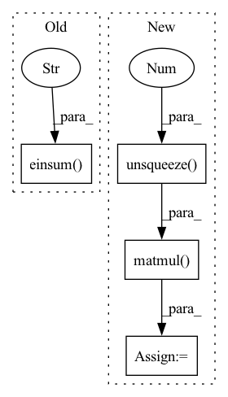

Pattern ID :24264
Before Change
// x: (batch_size, num_route_nodes, in_channels)
// route_weights: (num_route_nodes, num_capsules, in_channels, out_channels)
// u_hat: (batch_size, num_capsules, num_route_nodes, out_channels)
u_hat = torch.einsum("ijk, jlkm -> iljm" , x, self.route_weights)
// Detatch u_hat during routing iterations
u_hat_temp = u_hat.detach()
// Dynamic routeAfter Change
def forward(self, x):
batch_size = x.size(0)
// (batch_size, in_caps, in_dim) -> (batch_size, 1, in_caps, in_dim, 1)
x = x.unsqueeze(1).unsqueeze(4 )
//
// W @ x =
// (1, num_caps, in_caps, dim_caps, in_dim) @ (batch_size, 1, in_caps, in_dim, 1) =
// (batch_size, num_caps, in_caps, dim_caps, 1)
u_hat = torch.matmul( self.W, x)
// (batch_size, num_caps, in_caps, dim_caps)
u_hat = u_hat.squeeze(-1)
// detach u_hat during routing iterations to prevent gradients from flowing
temp_u_hat = u_hat.detach()
In pattern: SUPERPATTERN
Frequency: 4
Non-data size: 4
Instances Fragment ID: 75316669
Project Name: riroaki/capsnet
Commit Name: e62f83faad1731befd8a1e434aaf902e2140aecb
Time: 2020-03-08
Author: aki@akideMacBook-Pro.local
File Name: capsnet.py
M Class Name: DigitCaps
N Class Name: DigitCaps
M Method Name: forward(2)
N Method Name: forward(2)
M Parent Class: nn.Module
N Parent Class: nn.Module
M File Name: capsnet.py
N File Name: capsnet.py
M Start Line: 50
M End Line: 79
N Start Line: 59
N End Line: 93
Before Change
def _project_entities(self, entity_embs, entity_proj_vecs, relation_projs):
// batch_size = entity_embs.shape[0]
// identity_matrices = torch.eye(batch_size,self.relation_embedding_dim,self.entity_embedding_dim)
transfer_matrices = torch.einsum("nm,nk->nmk" ,
[relation_projs, entity_proj_vecs]) // TODO: Check + identity_matrices
projected_entity_embs = torch.einsum("nmk,nk->nm", [transfer_matrices, entity_embs])
// projected_entity_embs = F.normalize(projected_entity_embs, 2, 1)After Change
def _project_entities(self, entity_embs, entity_proj_vecs, relation_projs):
entity_embs = entity_embs
relation_projs = relation_projs.unsqueeze(-1)
entity_proj_vecs = entity_proj_vecs.unsqueeze(-1 ) .permute([0, 2, 1])
transfer_matrices = torch.matmul( relation_projs, entity_proj_vecs)
projected_entity_embs = torch.einsum("nmk,nk->nm", [transfer_matrices, entity_embs])
return projected_entity_embs Fragment ID: 75316702
Project Name: pykeen/pykeen
Commit Name: 4e05292101f5f478050ac8770d6284fb798b1112
Time: 2018-09-28
Author: ali-mehdi@live.de
File Name: src/keen/kg_embeddings_model/trans_d.py
M Class Name: TransD
N Class Name: TransD
M Method Name: _project_entities(4)
N Method Name: _project_entities(4)
M Parent Class: nn.Module
N Parent Class: nn.Module
M File Name: src/keen/kg_embeddings_model/trans_d.py
N File Name: src/keen/kg_embeddings_model/trans_d.py
M Start Line: 82
M End Line: 83
N Start Line: 80
N End Line: 84
Before Change
xy, z = torch.split(points, [2, 1], dim=-1)
c, s = torch.cos(theta), torch.sin(theta)
R = torch.stack((c, -s, s, c), dim=-1).view(1, -1, 2, 2)
xy = torch.einsum("ijkl,imjl->imjk" , R, xy)
xyz = torch.cat((xy, z), dim=-1)
return xyz
def sample_gridpoints(self, proposals):After Change
xy, z = torch.split(points, [2, 1], dim=-1)
c, s = torch.cos(theta), torch.sin(theta)
R = torch.stack((c, -s, s, c), dim=-1).view(b, n, m, 2, 2)
xy = torch.matmul( R, xy.unsqueeze(-1 ))
xyz = torch.cat((xy.squeeze(-1), z), dim=-1)
return xyz
def sample_gridpoints(self, proposals): Fragment ID: 75316698
Project Name: jhultman/vision3d
Commit Name: 1a652d6cae90ba6dca963f3725b0cb1b9049e39c
Time: 2020-02-12
Author: 27909223+jhultman@users.noreply.github.com
File Name: pvrcnn/roi_grid_pool.py
M Class Name: RoiGridPool
N Class Name: RoiGridPool
M Method Name: rotate_z(3)
N Method Name: rotate_z(3)
M Parent Class: nn.Module
N Parent Class: nn.Module
M File Name: pvrcnn/roi_grid_pool.py
N File Name: pvrcnn/roi_grid_pool.py
M Start Line: 41
M End Line: 43
N Start Line: 39
N End Line: 45
Before Change
// Compute score and transform result to 1D tensor
M = r_embs.view(-1, self.embedding_dim, self.embedding_dim)
scores = torch.einsum("nd,ndd,nd->n" , [h_embs, M, t_embs])
// scores = torch.bmm(torch.transpose(h_emb, 1, 2), M) // h^T M
// scores = torch.bmm(scores, t_emb) // (h^T M) h
// scores = score.view(-1, 1)After Change
// Compute score and transform result to 1D tensor
M = r_embs.view(-1, self.embedding_dim, self.embedding_dim)
h_embs = h_embs.unsqueeze(-1 ) .permute([0, 2, 1])
h_M_embs = torch.matmul(h_embs, M)
t_embs = t_embs.unsqueeze(-1)
scores = torch.matmul( h_M_embs, t_embs) .view(-1)
// scores = torch.bmm(torch.transpose(h_emb, 1, 2), M) // h^T M
// scores = torch.bmm(scores, t_emb) // (h^T M) h Fragment ID: 75316694
Project Name: pykeen/pykeen
Commit Name: d2de79dad7a9f1a0a00caeb31c6a64f7baaa91b6
Time: 2018-10-03
Author: ali-mehdi@live.de
File Name: src/keen/kg_embeddings_model/rescal.py
M Class Name: RESCAL
N Class Name: RESCAL
M Method Name: _compute_scores(4)
N Method Name: _compute_scores(4)
M Parent Class: nn.Module
N Parent Class: nn.Module
M File Name: src/keen/kg_embeddings_model/rescal.py
N File Name: src/keen/kg_embeddings_model/rescal.py
M Start Line: 65
M End Line: 66
N Start Line: 64
N End Line: 68